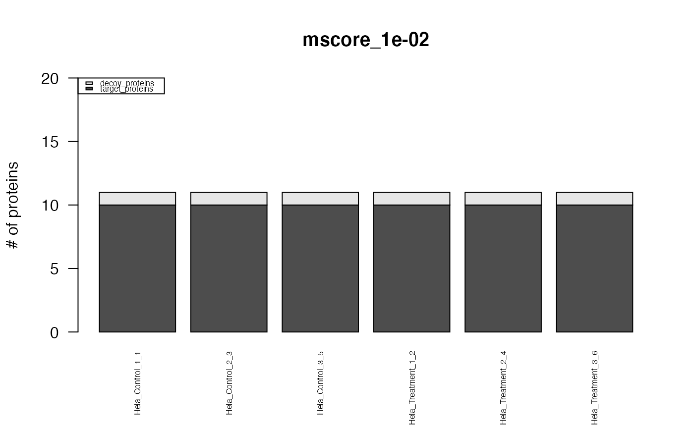

R/assess_fdr_byrun.R
assess_fdr_byrun.RdThis function estimates the assay, peptide and protein FDR by run in an OpenSWATH result table in dependence of a range of m_score cutoffs. The results can be visualized and summarized by the associated method plot.fdr_table(). It counts target and decoy assays (unique transition_group_id), peptides (unique FullPeptideName) and proteins (unique ProteinName) in the OpenSWATH output table in dependence of m-score cutoff, the useful m_score cutoff range is evaluated for each dataset individually on the fly. To arrive from decoy counts at an estimation of the false discovery rate (false positives among the targets remaining at a given mscore cutoff) the ratio of false positives to true negatives (decoys) (FFT) must be supplied. It is estimated for each run individually by pyProphet and contained in the pyProphet statistics [Injection_name]_full_stat.csv. As an approximation, the FFTs of multiple runs are averaged and supplied as argument FFT. For further details see the Vignette Section 1.3 and 4.1. To assess fdr over the entire dataset, please refer to function assess_fdr_overall. FDR is calculated as FDR = (TN*FFT/T); TN=decoys, T=targets, FFT=see above.
assess_fdr_byrun(
data,
FFT = 1,
n_range = 20,
output = "pdf_csv",
plot = TRUE,
filename = "FDR_report_byrun",
output_mscore_levels = c(0.01, 0.001),
score_col = "m_score"
)Annotated OpenSWATH/pyProphet output table. Refer to function sample_annotation from this package for further information.
Ratio of false positives to true negatives, q-values from [Injection_name]_full_stat.csv in pyProphet stats output. As an approximation, the q-values of multiple runs are averaged and supplied as argument FFT. Numeric from 0 to 1. Defaults to 1, the most conservative value (1 Decoy indicates 1 False target).
Option to set the number of magnitude for which the m_score threshold is decreased (e.g. n_range = 10, m-score from 0.1 until 10^-10)^.
Choose output type. "pdf_csv" creates the output as files in the working directory, "Rconsole" triggers delivery of the output to the console enabling further computation or custom plotting / output.
Logical, whether or not to create plots from the results (using the associated method plot.fdr_cube()
Modify the basename of the result files if set.
Define m-score levels to plot and write the estimated FDR results.
Column that contains the score. Default. m_score
Returns an array of target/decoy identification numbers and calculated FDR values at different m-score cutoffs.
{
data("OpenSWATH_data", package="SWATH2stats")
data("Study_design", package="SWATH2stats")
data <- sample_annotation(OpenSWATH_data, Study_design)
assessed <- assess_fdr_byrun(data, FFT=0.7, output="Rconsole", plot=TRUE,
filename="Testoutput_assess_fdr_byrun")
summary(assessed)
}
#> The average FDR by run on assay level is 0.003
#> The average FDR by run on peptide level is 0.004
#> The average FDR by run on protein level is 0.07

#> Min. 1st Qu. Median Mean 3rd Qu. Max.
#> 0.00248 0.54250 0.85000 35.09810 3.25000 282.00000